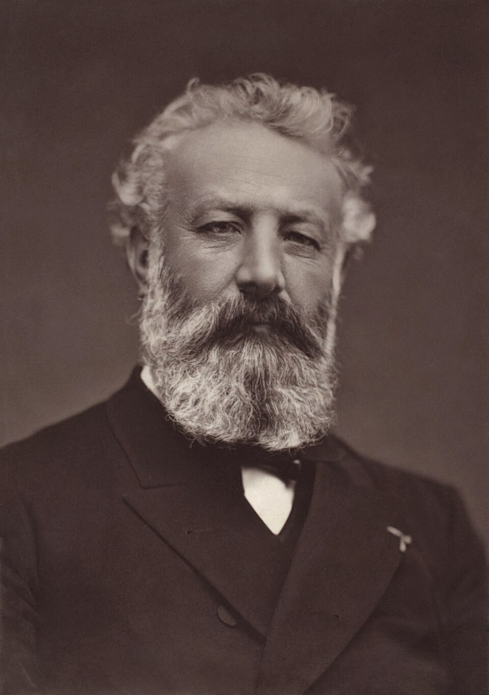

Trong một chuyến thám hiểm và lòng Châu Phi, đoàn thám hiểm với người đứng đầu là Barsac đã cóchuyếnduhành vào một thành phố bí ẩn giữa lòng sa mạc Sahara.
Thành phố phát triển này là do một nhà khoa học thông minh nhưng đầy tham vọng đen tối xây nên. Sức tưởng tượng của Jules Verne kết hợp với kiến thức khoa học đã tôn vinh những thành tựu tuyệt diệu của con người, và cũng cho thấy những thành tựu ấy chỉ nở hoa và trường tồn khi phục vụ cho mục đích tốt đẹp.

.Jules Gabriel Verne sinh ngày 8 tháng 2 năm 1828 tại Pháp và được coi là cha đẻ của thể loại Khoa học viễn tưởng.
Để theo đuổi việc viết văn, Jules Verne đã bỏ học luật, nghề cha ông định hướng. Cuốn tiểu thuyết đầu tay thành công Năm tuần trên khinh khí cầu (1863) đã mở đầu cho hàng loạt các tác phẩm nổi tiếng về sau của Jules Verne như Cuộc Thám Hiểm Vào Lòng Đất (1864), Hai vạn dặm dưới biển (1870), 80 Ngày Vòng Quanh Thế Giới (1873)… Các tác phẩm của ông được dịch khắp nơi trên thế giới.
Jules Verne mất ngày 24 tháng 3 năm 1905. Sau khi ông qua đời, nhiều tiểu thuyết chưa in của ông vẫn được tiếp tục xuất bản.
Không có mấy trọng tội khêu gợi được lòng tò mò của dân chúng như cuộc tấn công ăn cướp táo bạo, nổi tiếng dưới cái tên “Vụ cướp Ngân hàng Trung ương”.
Vụ án đã xảy ra ở chi nhánh DK thuộc Ngân hàng Trung ương, cạnh thị trường chứng khoán Luân Đôn, mà bấy giờ ông Lewis Robert Buxton đang phụ trách.
Chi nhánh đặt trong một sảnh lớn, được ngăn ra thành những phần không bằng nhau bởi chiếc bàn gỗ sồi dài. Bên trái cửa vào, sau chấn song sắt là nơi nhận phát tiền, ăn thông với gian làm việc của nhân viên bằng một cửa lớn ngay ngoài chấn song. Bên phải, cuối chiếc bàn gỗ sồi là cánh cửa tự khép, cho phép đi từ khu khách đợi vào gian làm việc của các nhân viên. Sâu bên trong nữa là văn phòng của giám đốc chi nhánh. Một hành lang chạy suốt từ gian của các nhân viên ra tiền sảnh của ngôi nhà...
Một bên, tiền sảnh đi ngang qua trước mặt người gác cửa. Bên kia, ở chỗ cầu thang chính, nó tiếp giáp với cửa ra vào có hai cánh bằng kính, chắn lối xuống tầng hầm và lên cầu thang phụ.
Khung cảnh nơi xảy ra tấn thảm kịch bí ẩn đó là thế.
Vào lúc 5 giờ kém 20 phút, khi tấn thảm kịch bắt đầu, năm nhân viên đang làm những việc thường ngày. Viên thủ quỹ ngồi đếm tiền sau song sắt. Tổng số tiền mặt thu được trong ngày hôm ấy rất lớn: 72.079 bảng, 2 silinh và 4 penxơ. Hai mươi phút nữa chi nhánh sẽ đóng cửa và các nhân viên có thể ra về sau một ngày lao động.
Lúc ấy cửa mở và một người bước vào. Hắn đưa mắt liếc nhanh văn phòng, xoay nửa người lại và giơ tay phải lên, chắc là để ra hiệu cho đồng bọn đang đứng trên vỉa hè. Ngón tay cái, ngón tay trỏ và ngón tay giữa của hắn diễn tả rõ ràng con số 3.
Sau khi ra hiệu, hắn đóng cửa lại rồi bước vào giữa văn phòng và xếp hàng sau một người khách, tỏ ý chờ người nọ làm xong việc và ra về.
Một trong hai nhân viên rỗi việc đứng lên hỏi:
— Ngài cần gì, thưa ngài?
— Cám ơn ông – gã mới vào trả lời, – tôi đợi cũng được.
Anh nhân viên ngồi xuống, tiếp tục công việc của mình. Gã đàn ông chờ đợi và không ai chú ý đến hắn cả.
Tuy nhiên, bề ngoài của hắn rất lạ. Đó là một người cao to, khỏe mạnh. Căn cứ vào chiều rộng của đôi vai thì biết hắn có sức mạnh phi thường. Bộ râu màu vàng tuyệt mỹ viền quanh khuôn mặt ngăm ngăm đen, không thể đoán ra địa vị xã hội của hắn vì chiếc áo khoác dài đã che lấp hết quần áo.
Khi một khách hàng xong việc, gã mặc áo khoác dài đứng vào chỗ của ông ta và bắt đầu nói chuyện với nhân viên. Lúc ấy ông khách kia đã mở cửa bước ra khỏi chi nhánh. Cánh cửa khép lại từ từ, để cho nhân vật thứ hai, lạ kỳ như tên thứ nhất, bước vào. Hắn giống hệt tên thứ nhất: cũng cao to như thế, cũng có đôi vai rộng bấy nhiêu, cũng bộ râu vàng bao quanh khuôn mặt rám nắng, cũng chiếc áo dài phủ kín quần áo. Nhân vật thứ hai hành động y như kẻ giống gã. Hắn kiên nhẫn đứng đợi sau hai người khách hàng còn đứng bên bàn viết. Rồi sau khi đến lượt, hắn bắt chuyện với nhân viên rỗi việc, lúc đó người khách hàng kia đã bước ra phố.
Như lần trước cánh cửa lại mở ra ngay. Người thứ ba bước vào, đứng xếp hàng sau ba người khách đầu, hắn cao trung bình, vai rộng và vạm vỡ, mặt đỏ và bộ râu đen. Hắn vừa khác lại vừa giống hai tên vào trước.
Cuối cùng, khi người khách sau cùng trong số ba vị khách còn lưu lại trong chi nhánh xong việc và rời chỗ thì cửa mở ra cho hai người cùng vào. Họ vận áo măng tô dài. Bộ râu rậm điểm tô cho khuôn mặt đỏ của họ.
Họ tiến vào cũng không bình thường: người cao hơn đi trước và vừa mới bước qua khỏi cửa, hắn đã dừng lại để che cho đồng bọn của hắn. Tên kia giả vờ bị vướng vào quả nắm ở cửa rồi làm gì đó rất bí ẩn, việc xảy ra chỉ trong khoảnh khắc và cửa đóng lại ngay, nhưng nắm cửa phía bên ngoài đã biến mất. Như vậy, không một ai ngoài phố có thể vào văn phòng được nữa. Ngoài ra, trên cửa còn xuất hiện một bản thông báo: Chi nhánh đã đóng cửa.
Các nhân viên không hề hay biết rằng họ đã bị tách khỏi thế giới bên ngoài.
Hai nhân viên rỗi việc bước vội về phía những người mới đến. Người sau bắt chuyện. Trong khi đó, người khách cao hơn muốn được trao đổi với ông giám đốc chi nhánh vài việc.
— Để tôi xem ông ấy có ở đây không đã, – một nhân viên nói.
Anh ta biến đi trong giây lát rồi trở lại ngay.
— Xin mời ngài vào đi! – anh nhân viên đề nghị và mở cánh cửa tự khép ở chỗ cuối chiếc bàn.
Người mặc áo măng tô bước vào phòng làm việc của ông giám đốc. Lúc đó anh nhân viên đóng cửa lại và trở về chỗ làm việc của mình.
Chuyện gì đã xảy ra giữa ông giám đốc và người khách hàng của ông ta? Về sau các nhân viên của chi nhánh quả quyết rằng họ không hay biết gì về màn kịch diễn ra bên trong cánh cửa đã đóng kín đó.
Chỉ có một điều chắc chắn là chưa đầy hai phút sau, cánh cửa lại mở ra và người mặc áo măng tô hiện ra nơi ngưỡng cửa. Hắn nói bằng giọng hoàn toàn bình tĩnh:
— Mời... Ngài giám đốc muốn nói chuyện với thủ quỹ.
— Vâng, thưa ông – một nhân viên rỗi việc đáp. Anh ta quay lại gọi to: – Store, giám đốc gọi anh.
— Tôi đi ngay đây – viên thủ quỹ trả lời.
Với tính cẩn thận vốn có của những người làm nghề thủ quỹ, ông ta bỏ chiếc cặp và ba cái bị đựng toàn bộ số tiền giấy và xu vào tủ sắt chống cháy, đóng tủ và sập cửa sổ xuống. Ông ta bước ra ngoài cửa chấn song, cẩn thận đóng nó lại rồi bước về phòng thủ trưởng. Người khách đang đứng đợi ông tránh ra một bên và vào theo.
Khi đã vào bên trong phòng làm việc của giám đốc, Store bối rối vì căn phòng trống không. Nhưng ông không có đủ thời gian để lý giải: hai bàn tay rắn như thép đã thộp lấy cổ họng của ông. Ông định vùng vẫy, la hét song vô ích vì đôi bàn tay sát nhân cứ siết chặt mãi cho tới khi ông ngã vật xuống tấm thảm, bất tỉnh nhân sự.
Không một tiếng động nào phát ra từ hành động tấn công dữ tợn này. Ở gian lớn, các nhân viên vẫn thản nhiên tiếp tục công việc: Bốn nhân viên đang tiếp mấy người khách đứng bên kia bàn, còn nhân viên thứ năm lo tính toán.
Tên mặc áo măng tô lau mồ hôi trán rồi cúi xuống người nạn nhân. Hắn nhanh nhẹn trói và bịt miệng ông ta lại.
Xong việc, hắn hé cửa và liếc mắt vào gian lớn. Hài lòng với điều mới kiểm tra, hắn bật ho như thể báo cho bốn gã khách đến sau phải chú ý rồi đẩy cửa ra.
Đó chắc chắn là tín hiệu đã được quy ước trước cho một màn kịch hết sức quái gở. Tên mặc áo măng tô nhảy một bước dài vào gian lớn, hùng hổ bổ nhào xuống anh nhân viên tính toán đơn độc và bóp cổ anh ta không thương xót. Gã khách đứng ở cuối bàn vọt qua cánh cửa nhỏ và quật ngã anh nhân viên đứng trước mặt hắn. Hai trong số ba khách hàng khác thì vươn tay qua bàn nắm cổ những người tiếp chuyện với mình và dộng đầu họ xuống mặt bàn gỗ sồi rất dã man. Tên thấp người còn lại thì nhảy lên bàn chộp cổ đối thủ.
Không một tiếng kêu. Sự việc xảy ra không quá ba mươi giây.
Việc hành hung chấm dứt. Các nạn nhân ngất xỉu. Kế hoạch tấn công được vạch ra rất tỉ mỉ. Bọn cướp rút ngay đồ nghề trong túi ra. Chúng nhét bông vào miệng các nhân viên ngân hàng và bịt lại, dù rằng việc này rất nguy hiểm cho tính mạng của họ. Chúng trói tay họ ra sau lưng, cột chặt chân và quấn dây thép quanh thân thể họ.
Mọi việc làm xong trong nháy mắt. Năm tên cùng đứng lên.
— Rèm che! – Gã đã yêu cầu gặp ông giám đốc ra lệnh. Có lẽ, hắn là tên chỉ huy.
Ba tên cướp lao ngay đến chỗ tay quay cửa kính.
Tấm bịt cửa bắt đầu buông xuống và từ từ làm dịu đi tiếng ồn ào từ ngoài phố vọng vào.
Bọn cướp bắt đầu lục soát két sắt. Các giấy tờ quan trọng, cổ phiếu và công trái bị vứt bừa bãi khắp sàn nhà. Giấy bạc và vàng được chia thành năm phần – theo số lượng bọn cướp.
— Gượm đã! – tên cầm đầu lên tiếng – Bọn ta thỏa thuận với nhau mấy việc. Khi tao ra, chúng mày phải ở lại đây. Sau đó, – hắn nói tiếp và chỉ vào cái hành lang thông sâu vào gian phòng. – chúng mày ra bằng đường này. Thằng nào ra cuối cùng sẽ vặn khóa cửa hai vòng rồi quẳng chìa khóa xuống cống. – Hắn chỉ vào phòng làm việc của viên giám đốc: – Chúng mày không được quên thằng cù lần đó. Chúng mày nhớ lệnh của tao chưa?
— Nhớ, nhớ ạ! – bọn kia trả lời hắn. – Đại ca cứ yên tâm!
— Chúng mày cứ quẳng áo khoác vào xó nhà. Thây kệ cho bọn chó tìm thấy mấy cái áo này. Điều quan trọng là chúng nó sẽ không còn nhìn thấy áo khoác trên người bọn ta nữa. Bọn ta sẽ gặp nhau ở chỗ mà chúng mày đã biết... Thôi tẩu đi!
5 giờ 30, ông Lasone, kiểm soát viên của ngân hàng, gọi điện đến chi nhánh DK nhưng không có ai trả lời ông, vì bọn cướp đã giật đứt ống nói mất rồi. Chúng sợ chuông điện thoại réo dài làm cho những người ở gần đấy chú ý. Ông kiểm soát viên hài lòng vì có dịp quở trách cô điện thoại viên.
Nhưng thời gian cứ trôi nên ông lại thử gọi một lần nữa. Vẫn vô tích sự như lần trước. Trạm điện thoại quả quyết rằng chi nhánh không trả lời. Ông kiểm soát viên phái cậu loong toong của ngân hàng đến xem tại sao chi nhánh không trả lời. 6 giờ 30, cậu loong toong trở về báo rằng chi nhánh đã đóng cửa và không có ai ở bên trong.
Ông kiểm soát viên ngạc nhiên vì hôm đó là một trong những ngày cuối tháng, mà đôi khi nhân viên phải làm việc đến tận 9 giờ tối.
Tức thì, ông gọi điện đi khắp nơi. Gần 8 giờ, với sự giúp đỡ của một anh thợ nguội được mời đến, đội cảnh sát đặc biệt mới mở được cửa của chi nhánh DK.
Bạn đọc đã biết người ta tìm thấy những gì trong đó.
Công tác điều tra được tiến hành ngay. Rất may, không một nhân viên nào của chi nhánh thiệt mạng. Họ nằm bất tỉnh khi mọi người đến cứu.
Sau hồi lâu chăm sóc, người ta đã làm cho họ tỉnh lại. Song họ chỉ có thể cung cấp được những tin tức hết sức nghèo nàn: Năm người có râu, mặc áo khoác dài và măng tô đã tấn công và quật ngã họ. Họ không biết gì hơn.
Chẳng thể nghi ngờ về lòng thành khẩn của họ. Trong góc phòng còn có năm chiếc áo khoác như thể bọn tội phạm muốn để lại vết tích của chúng. Hơn nữa, mấy chiếc áo được các thám tử giỏi nhất sở cảnh sát thủ đô xem xét kỹ lưỡng nhưng không cung cấp cho cuộc điều tra một manh mối nào. Áo may bằng loại vải thông thường. Không có nhãn hiệu của thợ may hay cửa hàng.
Viên dự thẩm không biết gì hơn. Ông ta hoài công tra hỏi mấy nhân chứng. Không thể moi được gì từ họ.
Nhân chứng quan trọng cuối cùng là người gác cửa. Cửa ra vào chi nhánh bị khóa lại ở bên trong, vì vậy bọn tội phạm đã thoát ra qua tiền sảnh và người gác cửa nhất định phải trông thấy bọn chúng. Nhưng hôm ấy, ông ta không nhận thấy điều gì khả nghi cả.
Sau một hồi vắt óc, ông ta mới nêu ra được tên của bốn người thuê nhà đã đi qua tiền sảnh mấy phút trước hoặc sau khi xảy ra vụ án. Họ bị hỏi cung ngay. Thì ra họ là những người rất mực trung thực và ra ngoài để ăn chiều.
Ông gác cửa còn nói về một người bán than. Anh ta mang một cái bao tải to, đến vào khoảng 7 giờ 30, trước khi cảnh sát xuất hiện một lúc. Ông gác cửa chú ý đến anh ta chỉ vì thường thường người ta không mang than đến vào giờ đó. Anh ta khẩn khoản xin gặp người thuê nhà ở tầng năm đến mức ông gác cửa phải để cho anh vào và chỉ cầu thang phụ cho đi.
Người bán than đi lên, nhưng 15 phút sau đã trở xuống, mang theo cái bao tải của mình. Khi ông gác cửa hỏi thì anh ta nói là bị nhầm địa chỉ. Anh ta nói bằng cái giọng ngắt quãng của người mang vác nặng lên tầng năm. Ra đến ngoài đường, anh ta đặt cái bao tải lên xe ba gác và thong thả kéo đi.
— Thế ông có biết – viên dự thẩm hỏi – người bán than ấy của cửa hàng nào không?
Ông gác cửa không biết.
Viên dự thẩm đã hỏi cung người thuê nhà ở tầng năm. Anh chàng bán than quả có gọi cửa phụ lúc gần 7 giờ 30. Cô hầu nói anh ta bị nhầm và anh ta bỏ đi luôn mà không hề nài nỉ đòi mở cửa. Song chứng cứ về điểm này không khớp với nhau vì cô hầu ở tầng năm tuyên bố rằng anh ta không mang theo cái bao nào cả.
— Anh ta đã để cái bao dưới nhà khi leo lên tầng năm – viên dự thẩm lý giải.
Rồi sau té ra rằng lời giải thích ấy không đúng vì người ta đã tìm thấy than dưới tầng hầm. Rõ ràng người bán than bí ẩn đã dốc sạch cái bao mang than ra đó. Nhưng anh ta đã mang đi cái gì, vì theo lời khai của ông gác cửa thì lúc bỏ đi, cái bao vẫn to, nặng như lúc anh ta đến?
— Chúng ta tạm thời gác việc này lại, – viên dự thẩm kết luận, ông không muốn giải quyết vấn đề vượt quá sức mình. – Nội vụ sẽ được làm sáng tỏ vào ngày mai, – ông đang lần theo dấu vết mà ông cho là quan trọng nhất và không muốn mình bị chệch hướng.
Quả thật, tất cả nhân viên của chi nhánh đều có mặt đông đủ. Nhưng nhân vật quan trọng nhất, ông giám đốc Lewis Robert Buxton lại biến đâu mất. Các nhân viên không thể giải thích được việc này. Kết luận tự nó đã hình thành: nếu như đã tin rằng chi nhánh bị năm tên cướp thay hình đổi dạng tấn công thì cũng phải tin rằng bọn chúng có tay trong và kẻ đồng lõa ấy chính là viên giám đốc.
Đó là lý do tại sao chưa điều tra xong mọi chi tiết mà đã có lệnh bắt giữ Lewis Robert Buxton, giám đốc chi nhánh DK thuộc Ngân hàng Trung ương. Đặc điểm nhân dạng của ông ta đã được thông báo đi khắp nơi.
Kẻ bị truy nã chưa thể rời khỏi nước Anh. Chắc chắn hắn sẽ bị bắt ngay trong nước hoặc ở bến cảng. Tự an ủi lòng mình bằng viễn cảnh êm ái đó, viên dự thẩm và các thám tử về nghỉ.
Đêm ấy, có năm người rám nắng, số còn để râu, số đã cạo, từ tàu tốc hành Luân Đôn bước xuống ga Southampton. Sau khi đã bốc dỡ mấy bao hàng và một thùng to, nặng, họ thuê một cỗ xe ngựa chở tất cả ra cảng. Ở đó có một chiếc tàu thủy đang nhả khói dày đặc chờ họ bên bờ.
4 giờ sáng, triều lên. Khi cả thành phố Southampton còn đang yên giấc và chưa hề hay biết tý gì về vụ cướp ở chi nhánh DK thì con tàu đã rời cảng, chạy ngang qua đập chắn sóng ra khơi. Nó chở đầy các loại hàng hóa vô hại đến cảng Cotonou ở Dahomey.
Vào giờ sớm sủa đó, sau khi đã tạm hoãn cuộc điều tra, cảnh sát đang tận hưởng những giây phút nghỉ ngơi chính đáng.
Buổi sáng, cuộc điều tra được tiếp tục, song như mọi người đã biết, nó không mang lại kết quả nào. Ngày lại ngày cứ trôi qua mà năm tên cướp vẫn biệt vô âm tín. Không tìm ra cả Lewis Robert Buxton. Không một tia sáng nào có thể rọi vào bóng đen huyền bí. Kiệt sức, người ta chấm dứt vụ án.
Câu chuyện tiếp theo sẽ phơi bày toàn bộ điều bí ẩn đó. Bạn đọc có quyền hỏi rằng nó có thể vẽ nên những điều bất ngờ và kỳ lạ hơn chăng?